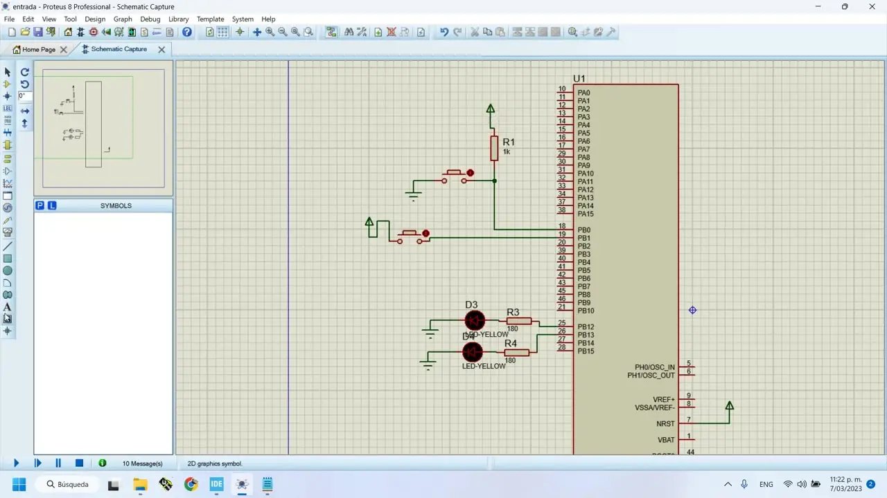

En el .ioc pon PB0 y PB1 como GPIO_Input (etiquetas in1 e in2) y PB12, PB13 como GPIO_Output (led1, led2).
Fase 1
Configurar entradas y salidas
En Proteus conecta un LOGICSTATE a PB0 para dar 0 o 1 a la entrada, y los LEDs con su resistencia a PB12 y PB13.
Fase 2
Leer un pin
Dentro del while(1), lo que lees en la entrada lo escribes en el LED:
HAL_GPIO_WritePin(led1_GPIO_Port, led1_Pin, HAL_GPIO_ReadPin(in1_GPIO_Port, in1_Pin));En Private define crea un alias para la lectura, así el código queda más legible:
#define sw1 HAL_GPIO_ReadPin(in1_GPIO_Port, in1_Pin)#define sw2 HAL_GPIO_ReadPin(in2_GPIO_Port, in2_Pin)Fase 3Pulsadores en PB0 y PB1 R1 pull-up y R2 pull-down
Pulsadores: pull-up y pull-down
Un pulsador solo da un nivel cuando se presiona; suelto, la entrada queda flotando. Hay que asegurar los dos niveles lógicos con una resistencia:
- Pull-up: resistencia de 1k a 47k a positivo. Suelto lee 1, presionado (a tierra) lee 0.
- Pull-down: resistencia a tierra de 330 Ω a 1k (recomendado 1k). Suelto lee 0, presionado (a positivo) lee 1.

El STM32 trae resistencias internas. En CubeMX, System Core → GPIO, selecciona el pin y en GPIO Pull-up/Pull-down elige Pull-up o Pull-down. Así te ahorras la resistencia externa.
Fase 4
Decidir con if
if (condición) { acciones }. Operadores de comparación:
- == igual
- != diferente
- > mayor, < menor
- >= mayor o igual, <= menor o igual
No confundas = (asignar) con == (comparar). if(sw1=0) compila pero no hace lo que quieres.
sw1 tiene pull-up, así que presionado vale 0. sw2 tiene pull-down, presionado vale 1. Agrega un retardo de 150 a 300 ms para el rebote y para que el toggle no se repita muy rápido.
if (sw1 == 0){ HAL_GPIO_TogglePin(led1_GPIO_Port, led1_Pin); HAL_Delay(200);}if (sw2 == 1){ HAL_GPIO_TogglePin(led2_GPIO_Port, led2_Pin); HAL_Delay(200);}Fase 5
Leer un puerto en modo registro
Para leer un número de 0 a 9 conecta un THUMBSWITCH-BCD a PB0 a PB3 (las 4 primeras entradas del puerto).
El registro IDR tiene el estado de todo el puerto. Con un AND con 0b1111 te quedas solo con los 4 bits bajos (PB0 a PB3):
#define puerto (in1_GPIO_Port->IDR & 0b1111)Pon el AND entre paréntesis. Sin ellos, al escribir puerto>=5 la comparación se hace antes que el & y el resultado es incorrecto.
Si el valor es 5 o más parpadea led1, si no, led2:
if (puerto >= 5) HAL_GPIO_TogglePin(led1_GPIO_Port, led1_Pin);else HAL_GPIO_TogglePin(led2_GPIO_Port, led2_Pin);HAL_Delay(200);